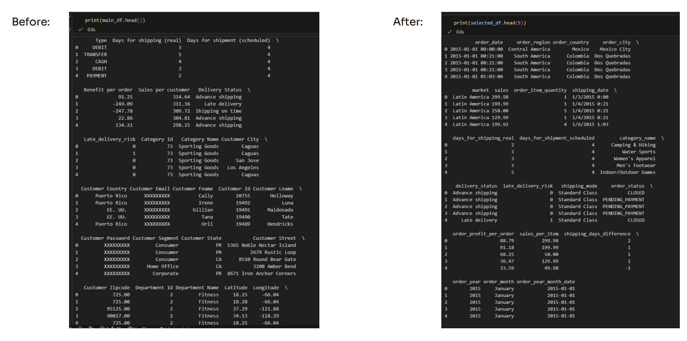
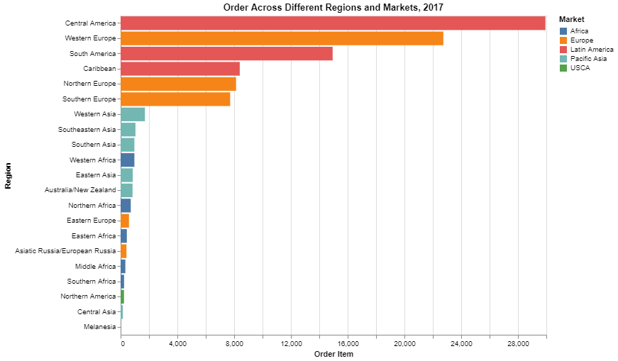
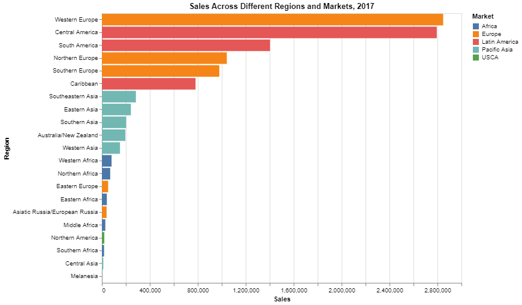
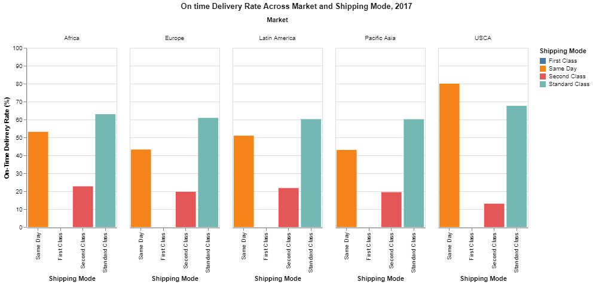
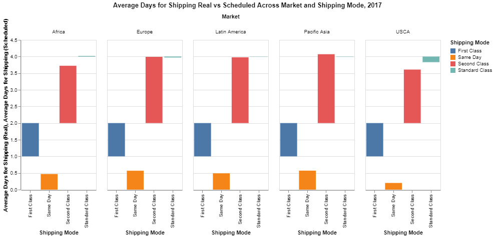
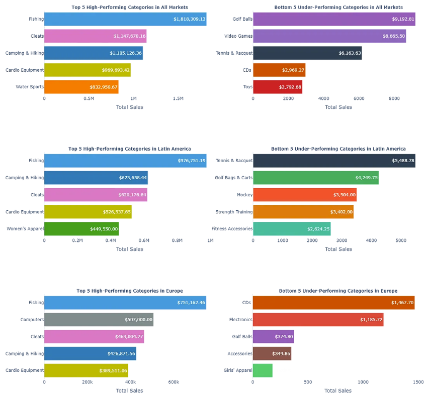
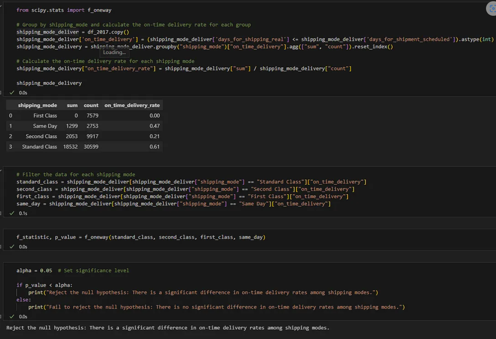
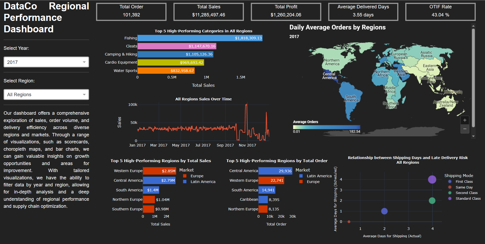

DataCo Regional Performance Analysis and Supply Chain Optimization
Published: 14.04.2023

A well-functioning supply chain is crucial for businesses to provide quality products and satisfy customers. In my project, “DataCo Regional Performance Analysis and Supply Chain Optimization,” I analyze DataCo’s regional performance and offer recommendations for enhancing their supply chain management. My goal is to understand the complexities of supply chain management, refine my analytical skills, and provide actionable insights for DataCo’s improvement. This project is part of the Final Project Business Analytics class at Sekolah Data Pacmann.
The goal is to develop a comprehensive dashboard that enables stakeholders to make informed decisions on region expansion, resource allocation, and process optimization. The dashboard will provide insights into regional sales performance, order volume, and delivery efficiency, identifying high-performing and underperforming regions to optimize resource allocation.
Key metrics include total sales and orders by region and market, total profit, average delivered days, average orders, OTIF rate, and sales by product category within each region. By assuming that the company plans to grow its operations in underperforming regions and optimize supply chain processes in high-performing regions, the management team can use this data-driven approach to identify high-potential markets and areas for improvement in current operations.
Data Cleaning and Feature Engineering
Before diving into the analysis and dashboard creation, I meticulously examined the dataset’s columns and selected 16 out of the 53, which were adequate for my project. I then performed data cleaning tasks, such as reformatting column names into a uniform snake case format and replacing country and region names with their English or internationally recognized counterparts.
Once the data was cleaned, I moved on to feature engineering, extracting valuable information from existing columns and creating new ones. I calculated sales per item, determined the shipping days difference between actual and scheduled times, and extracted year, month, and date from the order date for more accessible filtering and analysis later. The resulting dataframe, shown in the images, illustrates the transformation after cleaning and feature engineering, providing a solid foundation for the subsequent stages of the project.

Data Analysis and Business Insights
In this section, I conducted data analysis, derived insights, and performed statistical testing to validate the findings. The analysis of the DataCo’s data revealed valuable insights into sales performance, order trends, delivery efficiency, and product performance. Based on these insights, I propose the following recommendations and future work to enhance the company’s operations and customer satisfaction:
Sales and Order Analysis:
- Prioritize high-performing markets like Europe, Latin America, and Pacific Asia to maximize sales growth.
- Capitalize on seasonal trends by targeting marketing efforts and promotions during high-demand months, such as November and December.
- Investigate the reasons behind the low sales numbers in the USCA market and develop strategies to boost sales in this region.
 
Delivery Efficiency Analysis:
- Address the 0% on-time delivery rate for First Class shipping across all markets by analyzing the causes of delays and implementing process improvements or collaborating with shipping partners.
- Improve shipping performance for Second Class shipping, which consistently takes longer than scheduled, by identifying bottlenecks and developing solutions with shipping partners.
- Maintain the strong performance of Standard Class shipping and replicate the faster-than-scheduled performance observed in Europe and USCA markets across all regions.
 
Delivery Efficiency Analysis:
- Promote top-performing products such as Fishing, Cleats, and Cardio Equipment across all markets while considering regional preferences and trends.
- Evaluate underperforming product categories like Golf Apparel, Hunting & Shooting, and Lacrosse, and explore ways to improve sales, such as targeted marketing campaigns, better product offerings, or discontinuing certain products. 
Hypothesis Testing on Shipping Modes:
The one-way ANOVA test results indicated significant differences in on-time delivery rates among shipping modes. Use this information to prioritize and allocate resources towards more efficient shipping modes, enhancing the overall delivery experience for customers. 
You can view my full findings for this project on this pdf file
Dashboard
 The primary users of the dashboard will be supply chain managers, regional managers, and company executives responsible for strategic decision-making and performance evaluation. The dashboard will provide insights into regional sales performance, order volume, and delivery efficiency, enabling stakeholders to make informed decisions regarding market expansion, resource allocation, and process optimization.
Built on top of Dash and deployed on Render, this dashboard provides a comprehensive exploration of sales, order volume, and delivery efficiency across various regions and markets. Visit this link to try out the dashboard
(Note: It may take a few minutes for the page to load initially, as I am using Render’s free tier. The delay is not indicative of a broken site; please be patient and give it a moment to load)
Future Work
In the future, I would like to explore several areas further using this dataset and project:
- Analyze customer demographics and preferences to tailor marketing campaigns and product recommendations more effectively.
- Examine the impact of external factors on the company’s sales and operations to better adapt and respond to market dynamics.
- Conduct an in-depth analysis of the supply chain to pinpoint opportunities for optimization and cost reduction.
By addressing these recommendations and pursuing these avenues for future work, I believe the company can elevate its performance, enhance customer satisfaction, and establish a more reliable and efficient supply chain.
You can view the complete code and project process on this GitHub repository.